为了能双盘而奋斗的那些日子里
当我于2015年6月初看完Taiguanglin师父的《坐禅》一书后，当时我只知道三点：跏趺坐、腹式呼吸、磕大头。这三点对于身体健康非常有好处！至于什么佛法，我之前没有看过啥经书、咒语，周围也没人(应该是我不知道)告诉我佛法啥的，直到2015年10月份，重新认真读《坐禅》后，我才真正开始认识到佛法对于凡夫意味着什么！
为了达成这三个目标，我也在2015年6月7日，按照书中所要求的，制定出了一个非常粗糙了“每月修行计划”。详见下图1，更详细的“每月修行计划”，见本文最后的附图。
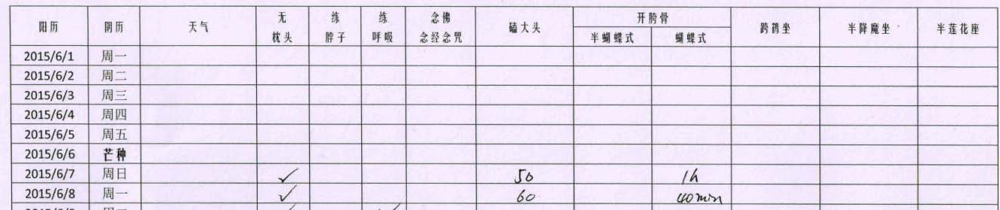
磕大头于2015年7月7日就达到了555个。并保持每天磕大头555个，一直到2015年11月9日。(补充一句，Tai师父开示过：清晨不适合磕大头)
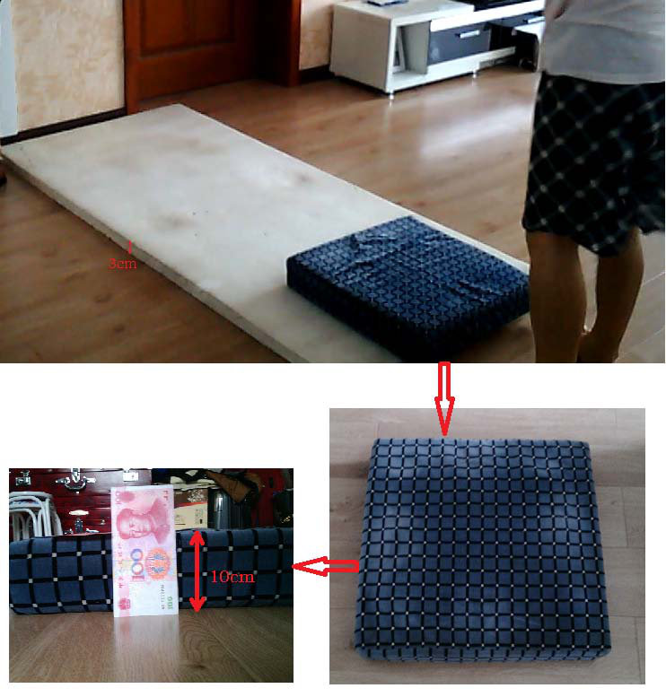
腹式呼吸的习惯于2015年10月份就达成。
剩下唯一没有达成的就是跏趺坐——双盘！对我来说，双盘应该算是一个明显的软肋，花费好几月的时间也没什么明显的进展。我呢，是一个比较怕疼的那种人，所以，把腿硬抬上来，我是做不来的。
为了双盘，我练习过不少的姿势：单盘、蝴蝶式、蝴蝶式(改进式)、跨鹤坐、“单盘压腿”、“拉筋”。我没什么常性，太长时间的练习，若不能到有双盘的希望，我就换下一个姿势。
到了2016年2月底，我感觉“单盘压腿”最适合目前阶段的我了。随着3月1日开始“单盘压腿”的练习，我的两条腿压的效果是突飞猛进，很快就达成了“单盘压腿”第一、二步的目标要求，接着开始第三步的练习。
单盘压腿”第三步的练习过程中，在与群里朋友的交流中，我又加入了“拉筋”——它加快了高高翘起的左腿的平伏。
从2015年到2016年，为了达成双盘的目标，我锻炼的大致过程如下(详见每月的修行计划)：
2015/06/07～2015/09/07
我主要练习蝴蝶式。动作示范见下图3：
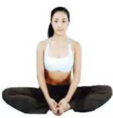
2015/09/08～2015/10/10
我主要练习单盘。最终，我的半莲花坐和半降魔坐都能达到60分钟。图4中，我盘得有些松！
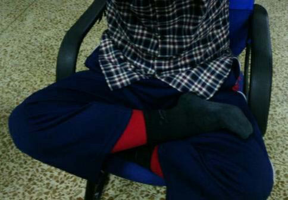
2015/10/11～2016/02/29
我主要练习并完成了蝴蝶式(改进版)第一式以及蝴蝶式(改进版)第二式的第一阶段。动作示范见下图5和下图6：
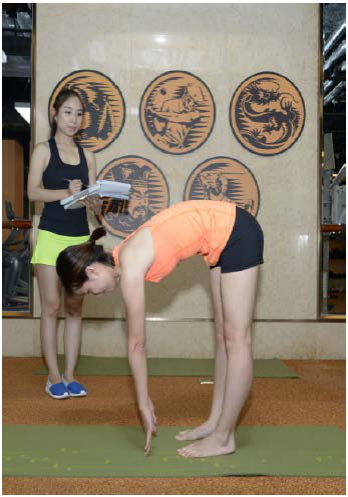
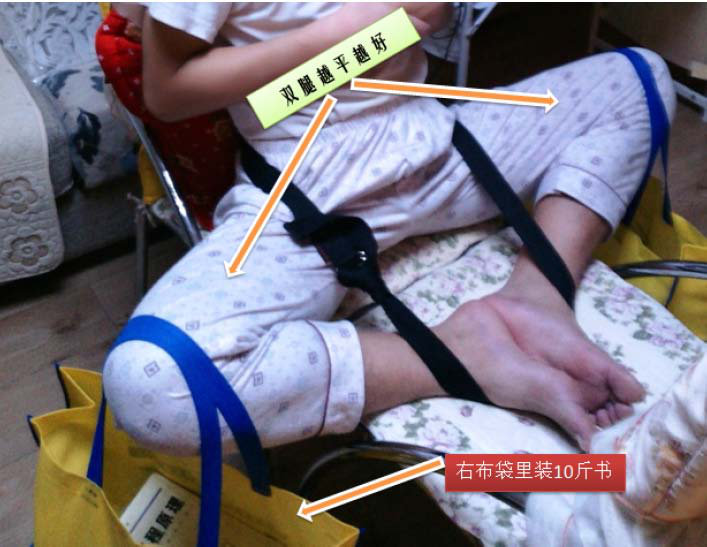
2016/03/01～2016/04/15
我主要练习并达成了“单盘压腿”第一、二步。
第一步的关键处在于，处在上面的腿，它的脚后跟要尽可能的靠向小腹，最好接触到小腹；它的五个脚趾尽可能靠上一些，最好超出下面大腿的切线之外。动作示范见图7，要注意图里处在左腿上面的右腿脚后跟和五个脚趾。
“单盘压腿”的第一步：先单盘，然后用双手压这条腿的膝盖，慢慢向下压，直到压到贴住下面的腿。
“单盘压腿”的第二步：将下面的脚向前移动，使得上面腿的膝盖可以压到坐垫上，并与下面脚的脚后跟贴平。
2016/04/16～2016/05/08
我主要练习“单盘压腿”第三步以及“拉筋”。
“单盘压腿”的第三步：用10块泡沫垫子，把下面向前移的脚垫高，高度大约为15厘米——已经超过膝盖的
宽度。这样，当上腿压到坐垫的时候，下面的脚实际上比膝盖高一点。动作示范见下
图7和下图8：
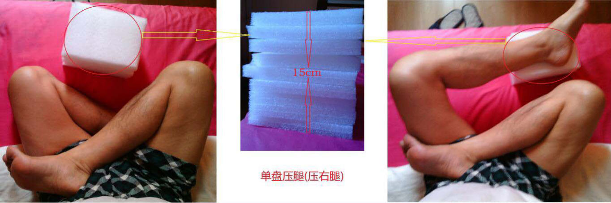
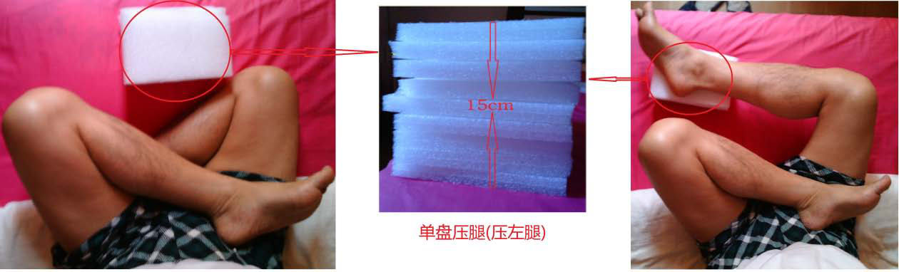
“拉筋”：单盘/双盘时，上身前倾，头部分别向左膝盖、右膝盖、坐垫下探，争取头部能分别触碰到左
膝盖、右膝盖、坐垫。这个动作能拉长左、右大腿外侧的筋。动作示范见下图9：
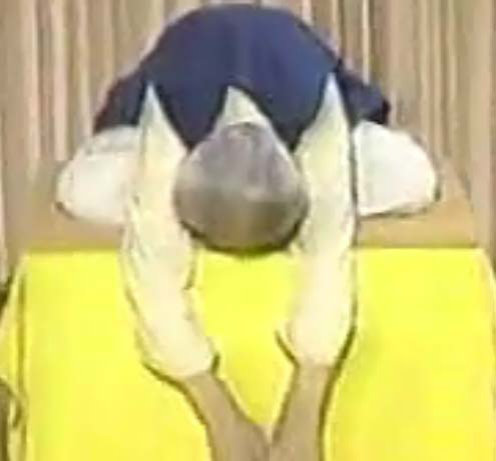
2016/05/09
今天下午例行“单盘压腿”第三步的练习。压了大约50分钟左右后，试了试降魔坐，非常勉强地盘上，只能保持几秒种，而且左腿只能搁在右腿的膝盖附近——应该是左腿压的不够。
随后又试了试莲花坐，没想到慢慢就抬上去了，不疼，也不酸，也就30秒吧。之后，很兴奋，就抬下处在左腿上的右腿了。我的第一次莲花坐，见下图10：
2016/05/10～2016/05/21
这几天，持续努力。5月17号，我试了试降魔坐，腿能搬上来！后来，再试了试在没用垫子的条件下，看看能不能直接把腿掰上来，结果，降魔坐和莲花坐都可以。可惜，这次都没有超过30秒！
虽然可以把腿抬上来，但是，都存在一个问题:下面的腿的脚后紧着小腹，但上面的腿的脚后跟却不能，这样，上面的小腿会咯着下面的小腿。问了问群里的禅友，他们的答案是：熬着熬着，就过去了！那我就先熬着吧！
现在我双盘时的两腿姿势非常难看，简直难以见人了。
5月21号，压腿很顺利，双盘也很顺利，降魔坐和莲花坐都达到了3分钟——很开心！当天的双盘见图11、图12：
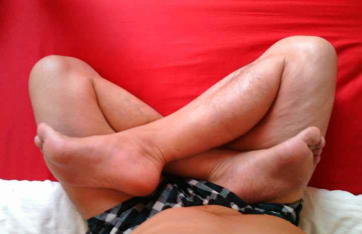
因此，第1阶段——为了能双盘——的目标，到今天算是已经达成了！
为了能双盘120分钟而奋斗的那些日子里——这就是我下一篇日记的标题，也是我修行的下一阶段目标！
冲刺三气归元的那些日子里——第3阶段目标！
为了从坐忘中走出来的那些日子里——第4阶段目标！
……
附圖：每月修行計劃（2015 年 6 月～2016 年 5 月）
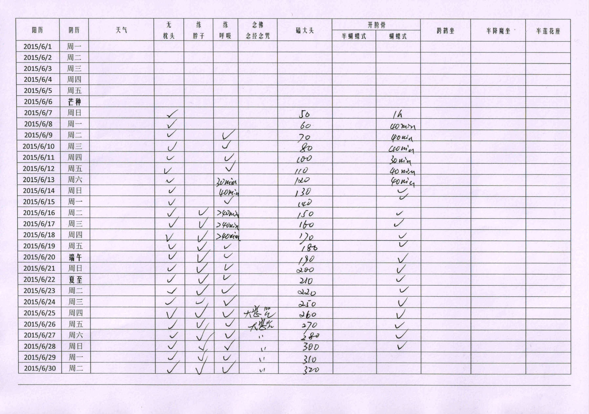
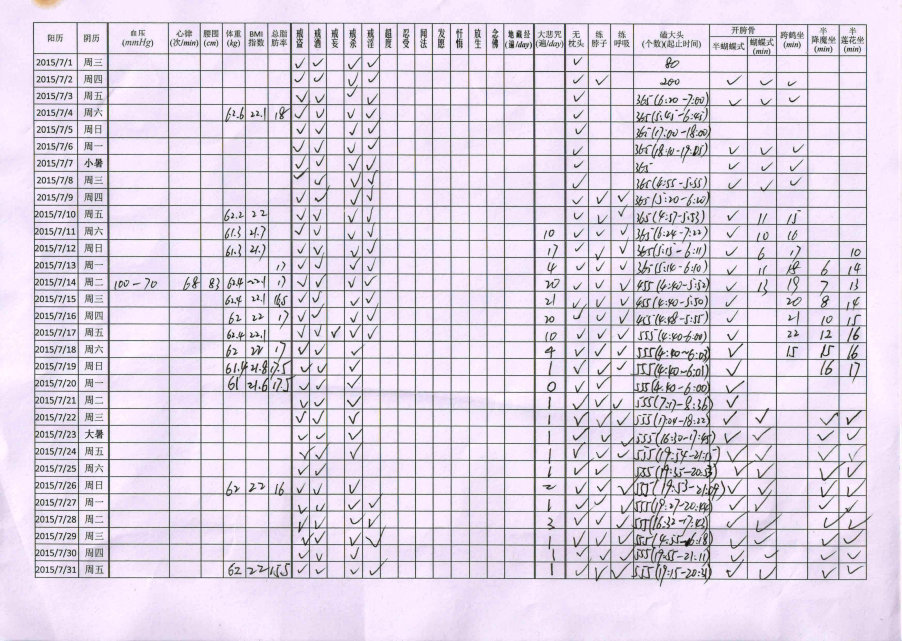
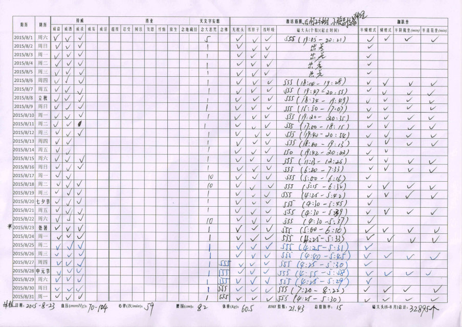
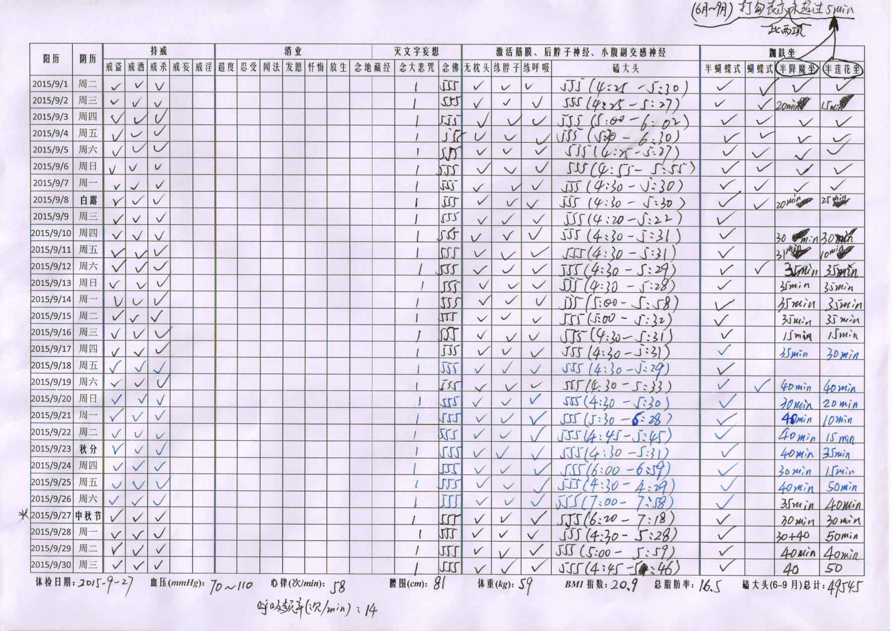
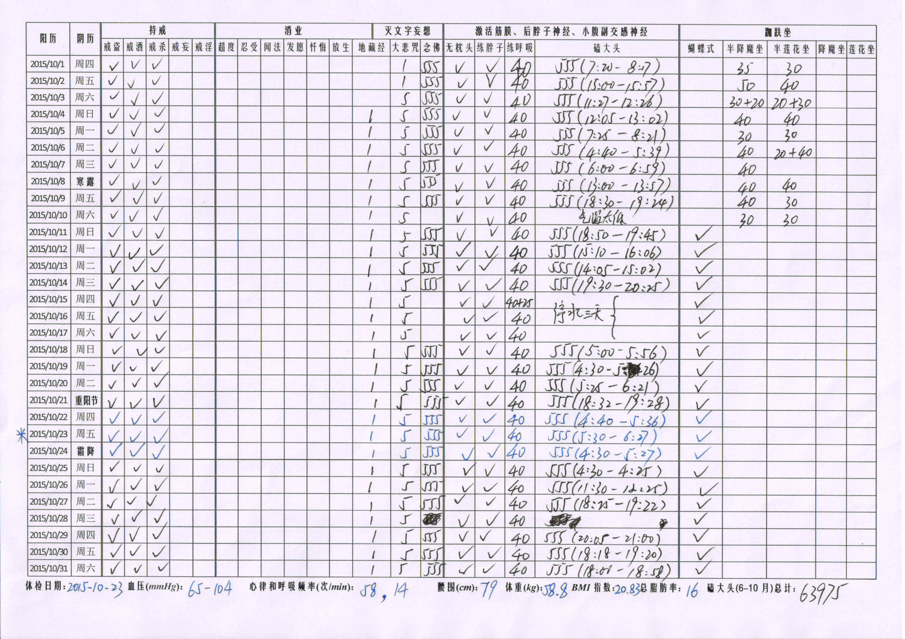
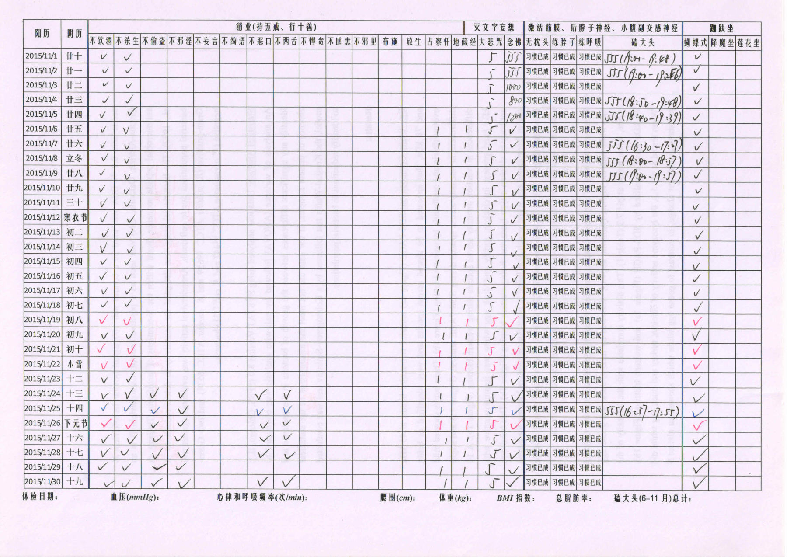
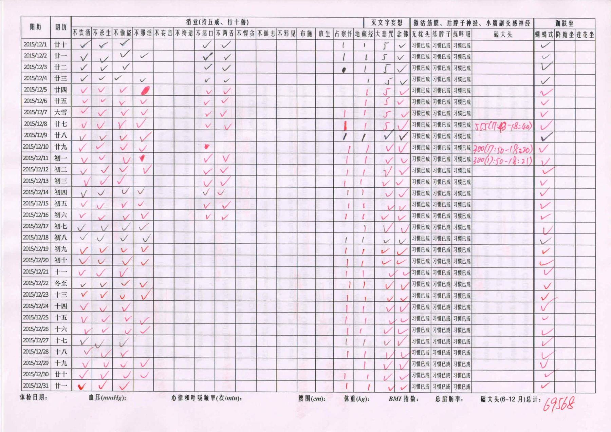
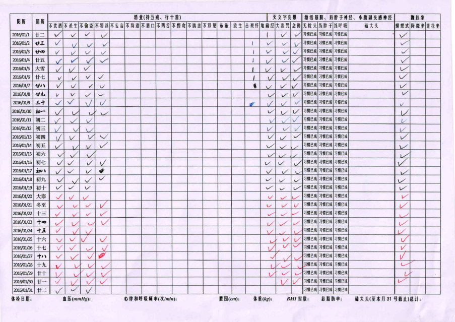
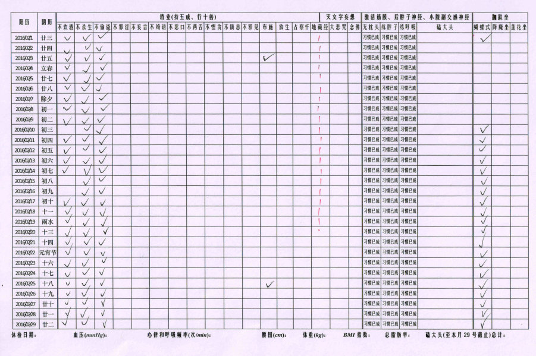
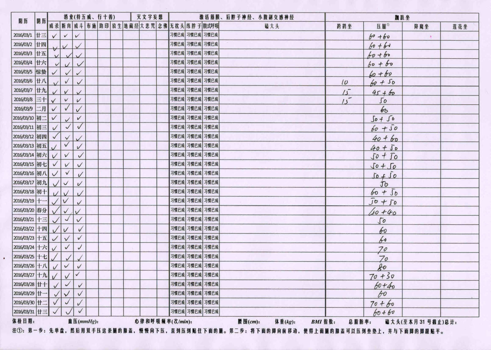
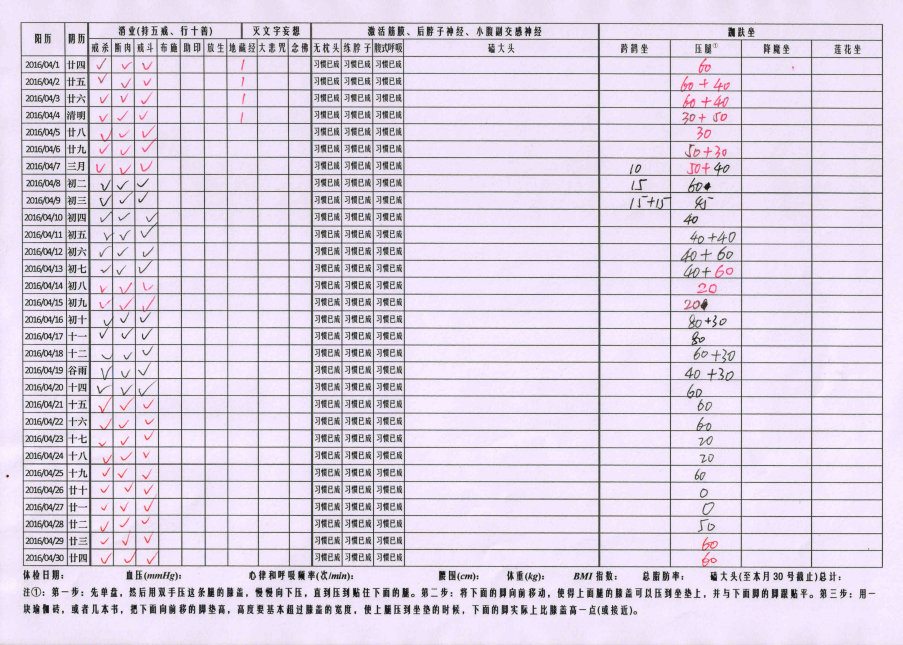
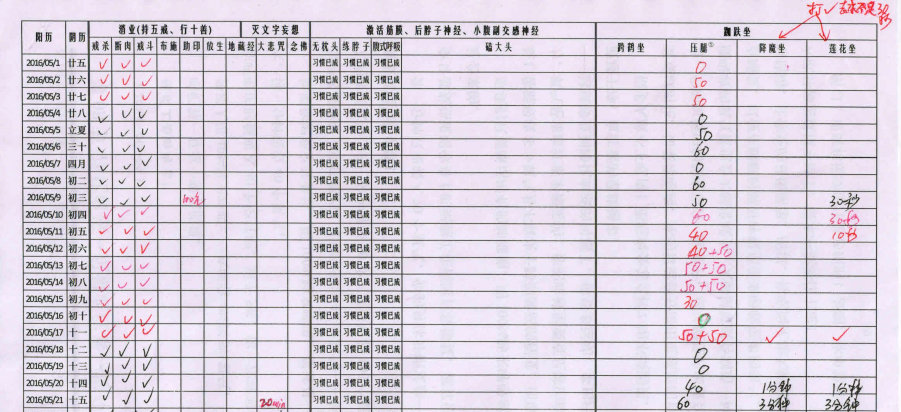